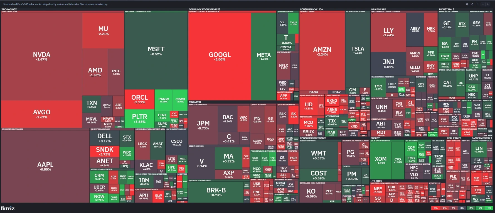

This project critiques the Finviz S&P 500 Map, a treemap on finviz.com that displays every company in the S&P 500 index. Each company appears as a tile grouped by sector and industry. Tile size encodes market capitalization, and tile color encodes the day's percent change in stock price, green for gains and red for losses. The map updates throughout each trading day from live market data; the screenshot in this report was captured on September 24, 2026 (Finviz, n.d.).
The intended message is to summarize how the market performed on a given day, across the index as a whole and within each sector, drawing attention to which sectors led gains or losses and which companies moved the most. The intended audience is active traders and casual market watchers who want a fast visual read of the day's action rather than a table of numbers. The main tasks it supports are scanning for the biggest movers, comparing sectors at a glance, and forming a quick sense of overall market sentiment.

The redesign is a linked pair of views built with D3.js, live below in Figures 2 and 3: hover a sector, click to drill into its companies, or switch the toggles, and both views respond.
Tile color shows the size of the daily change on a continuous scale. Bar color only marks up or down and reads the exact value from bar length and label.
The first pair of changes fixes how change is read. Daily percent change moves off tile color and onto bar length and position along a zero-centered axis. This addresses the competing channels problem by giving change a precise, dedicated channel where a viewer can rank sectors and companies rather than sensing direction from a color. Once change had its own channel, color no longer needed to carry precise information. Every bar is recolored with a single flat green or red instead of a gradient, which fixes the imprecise color problem as well. Color now marks sign only and never repeats what bar length already shows.
The remaining two changes fix how a market-wide move is summarized. A toggle between cap-weighted and equal-weighted sector averages, paired with a breadth summary of advancers and decliners, addresses the cap-weighting distortion. A viewer can confirm whether a move is broad-based or driven by a handful of large companies, rather than relying on one headline number. The compare panel, live in Figure 4, extends that idea to individual companies. A viewer searches for any company and adds it to a shared chart, so companies from different sectors sit on one axis. This supports a task the original design cannot do at all, comparing specific companies directly instead of scanning the whole map. It reuses the same flat colors and signed labels as the sector chart.
Four changes separate the redesign from the original, each mapped to a weakness identified above. Daily percent change moved from tile color to bar length and position, so a viewer reads and ranks performance directly rather than judging it by a color's intensity. Bar color changed from a continuous gradient to a single flat green or red, removing the redundant encoding that had two channels competing for the same message. A weight toggle and breadth summary let a viewer see the cap-weighted number the index reports alongside the equal-weighted number that reflects the typical company, surfacing cases where the two diverge. Finally, the compare panel adds a task the original visualization never supported, placing any selection of companies from different sectors on one shared axis instead of hunting across the map.
Together these changes make ranking and precise comparison much easier. A viewer can see immediately which sector moved the most and confirm whether that move was broad-based or driven by a few large companies. The original only supported that by scanning for color intensity. The trade-off is density. The original shows all five hundred companies on one screen, while the redesign asks a viewer to drill into a sector to see individual companies.